Ever felt the need to get your story out, on the spot
Seen an event unfold in front of you that needed to be shared?
can do all that and more!
OVERVIEW

Media recorded by stickers is uploaded as a live feed to the platform of your choosing (on the sticker sheet).
Stickers output media from a source of your choosing thanks to wireless networking capabilities.
Each sticker has a different function to help the user record their own newscasts and capture footage.
 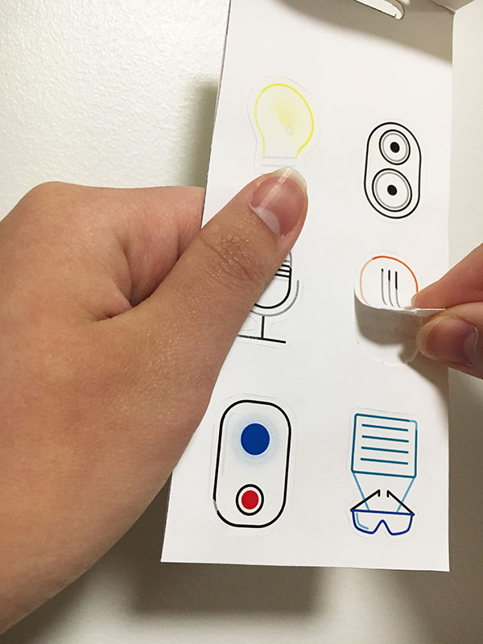
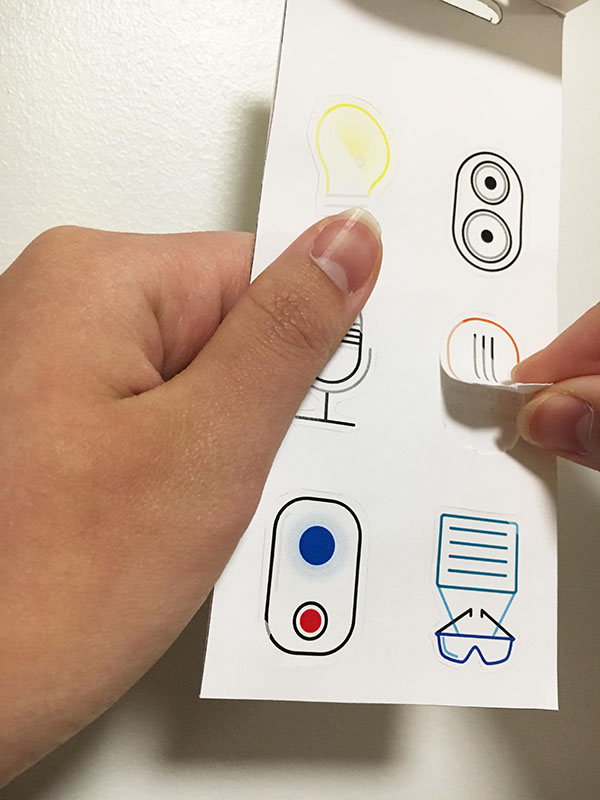
 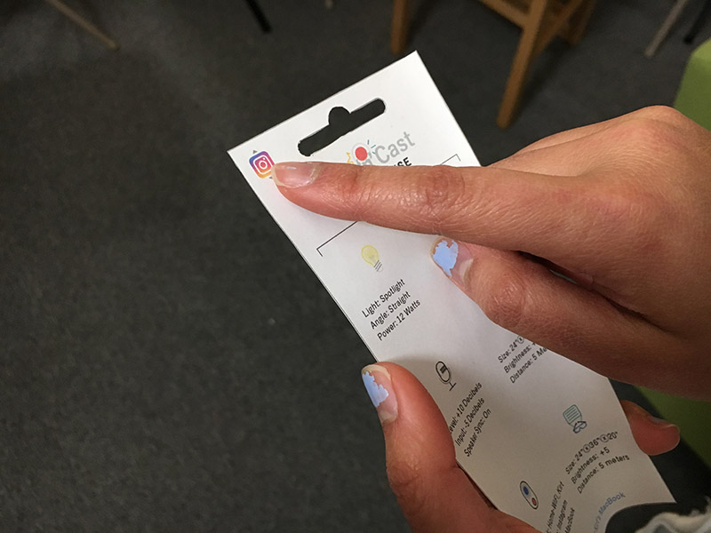
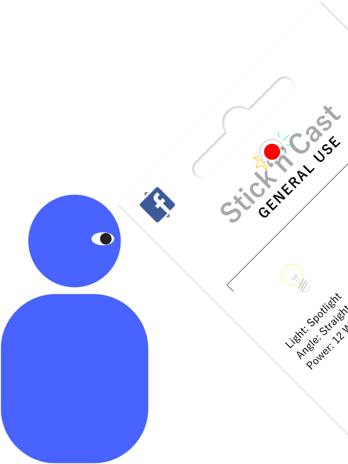
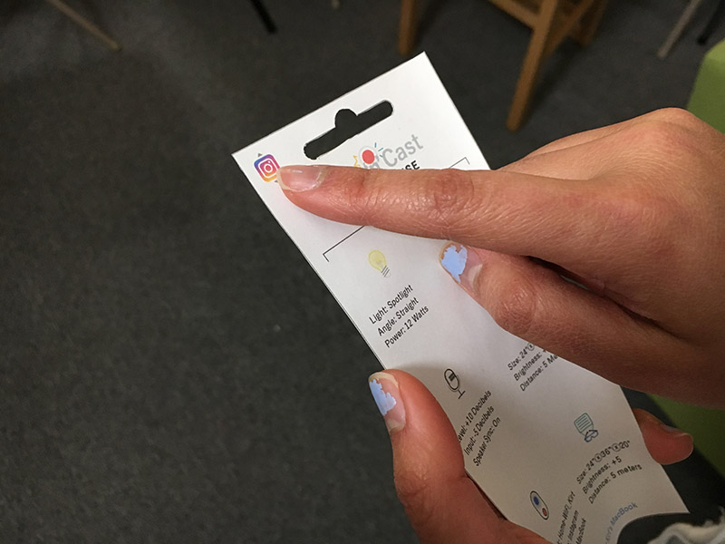
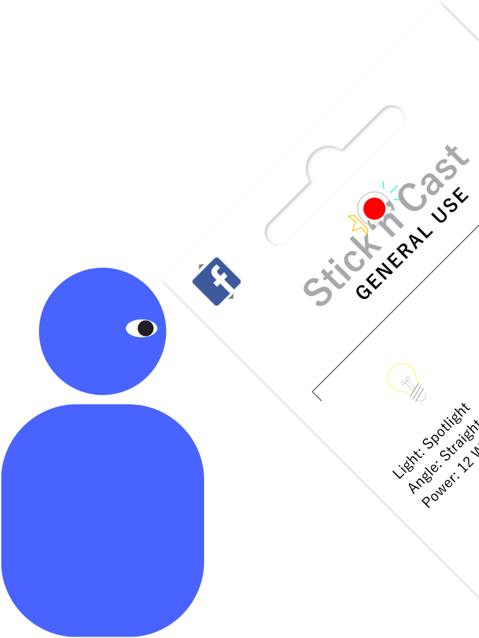
CONCEPT

1) User gets the sticker pack (version depends on situation, such as rainy day sticker pack for a rainy day).
2) Set up stickers to create news room/impromptu news feed. Stickers activate upon placement.
3) Recording is transmitted to a live feed of your choosing (based off of social media button on package).

4a) User removes stickers, causing the effects of each one to end.
4b) Meanwhile, the news story and recording is transmitted to the platform the user chose as a live feed.
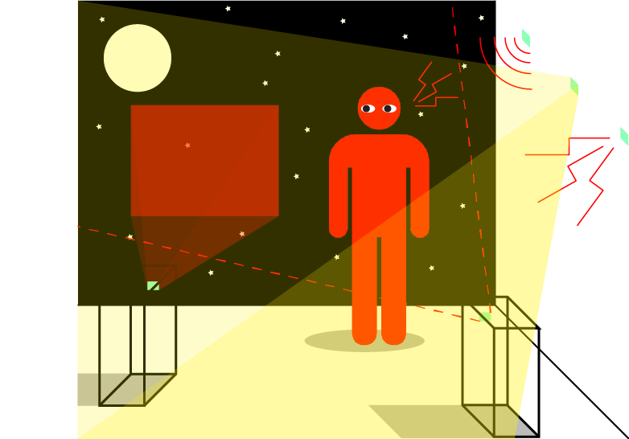(View more details and wireframes)
PROCESS
The initial conceptualization began by brainstorming the different applications of paper with smartphone qualities:
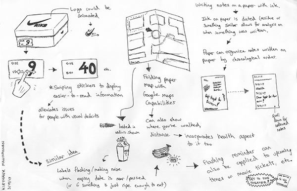 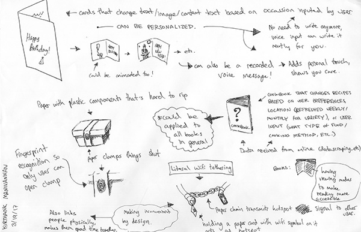
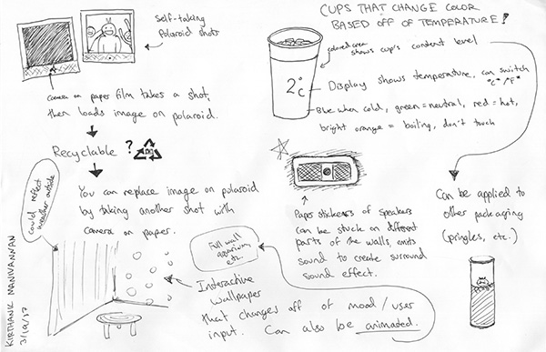
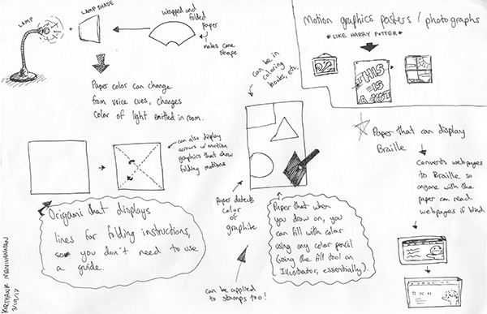
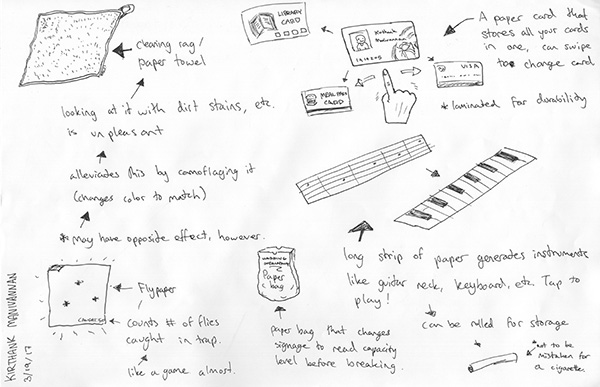

This was then followed by creating multiple wireframes (shown in Concept Section), as well as creating a prototype. These steps were repeated and refined.
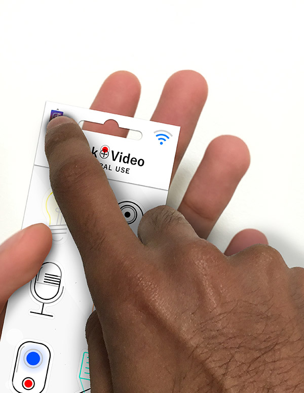The final phase was to create high fidelity keyframes, and documenting the product in situ (shown in photos in the Overview Section).

Kirthank Manivannan, RISD
Editorial Design for Screen
Instructor: Dylan Greif
Spring 2017